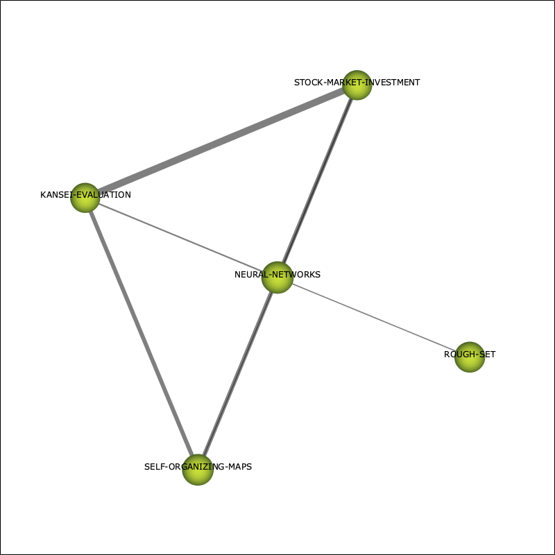

SciMAT report - subperiod 2010-2014 - cluster NEURAL-NETWORKS
Cluster info:
- Name: NEURAL-NETWORKS
- Density: 58.89
- Densisty range: 0.94
- Centrality: 0.11
- Centrality range: 0.11
Cluster network:

Internal links:
Internal links
| Node A |
Node B |
Weight |
| NEURAL-NETWORKS |
ROUGH-SET |
0.17 |
| NEURAL-NETWORKS |
SELF-ORGANIZING-MAPS |
0.13 |
| NEURAL-NETWORKS |
KANSEI-EVALUATION |
0.22 |
| NEURAL-NETWORKS |
STOCK-MARKET-INVESTMENT |
0.22 |
| SELF-ORGANIZING-MAPS |
KANSEI-EVALUATION |
0.6 |
| SELF-ORGANIZING-MAPS |
STOCK-MARKET-INVESTMENT |
0.6 |
| KANSEI-EVALUATION |
STOCK-MARKET-INVESTMENT |
1 |
External links:
External links
| Node A |
Cluster node A |
Node B |
Cluster node B |
Weight |
| SELF-ORGANIZING-MAPS |
NEURAL-NETWORKS |
CONSENSUS |
CONSISTENCY |
0.01 |
Documents associated with the cluster
unionDocuments (100 first documents with highest impact)
- PALOMARES, I, MARTINEZ, L, HERRERA, F, A Consensus Model To Detect And Manage Noncooperative Behaviors In Large-scale Group Decision Making. Ieee Transactions On Fuzzy Systems 22:3 516-530 (2014). Times cited: 143
- SUN, J, LI, H, HUANG, QH, HE, KY, Predicting Financial Distress And Corporate Failure: A Review From The State-of-the-art Definitions, Modeling, Sampling, And Featuring Approaches. Knowledge-based Systems 57:null 41-56 (2014). Times cited: 94
- HUANG, B, LI, HX, WEI, DK, Dominance-based Rough Set Model In Intuitionistic Fuzzy Information Systems. Knowledge-based Systems 28:null 115-123 (2012). Times cited: 54
- PALOMARES, I, MARTINEZ, L, HERRERA, F, Mentor: A Graphical Monitoring Tool Of Preferences Evolution In Large-scale Group Decision Making. Knowledge-based Systems 58:null 66-74 (2014). Times cited: 37
- CHAKHAR, S, SAAD, I, Dominance-based Rough Set Approach For Groups In Multicriteria Classification Problems. Decision Support Systems 54:1 372-380 (2012). Times cited: 31
- DICK, S, TAPPENDEN, A, BADKE, C, OLAREWAJU, O, A Granular Neural Network: Performance Analysis And Application To Re-granulation. International Journal Of Approximate Reasoning 54:8 1149-1167 (2013). Times cited: 12
- MALAKOOTI, B, Decision Making Process: Typology, Intelligence, And Optimization. Journal Of Intelligent Manufacturing 23:3 733-746 (2012). Times cited: 9
- HSU, KW, Hybrid Ensembles Of Decision Trees And Artificial Neural Networks. 2012 Ieee International Conference On Computational Intelligence And Cybernetics (cyberneticscom) null:null 25-29 (2012). Times cited: 4
- PHAM, HV, CAO, T, NAKAOKA, I, COOPER, EW, KAMEI, K, A Proposal Of Hybrid Kansei-som Model For Stock Market Investment. International Journal Of Innovative Computing Information And Control 7:5B 2863-2880 (2011). Times cited: 3
- PHAM, HV, TRAN, KD, KAMEI, K, Applications Using Hybrid Intelligent Decision Support Systems For Selection Of Alternatives Under Uncertainty And Risk. International Journal Of Innovative Computing Information And Control 10:1 39-56 (2014). Times cited: 2
- PHAM, HV, CAO, T, NAKAOKA, I, KUSHIDA, J, COOPER, EW, KAMEI, K, A Group Decision Support System Using Hybrid Kansei-som Model For Stock Market Investment Strategies And Its Application. International Journal Of Innovative Computing Information And Control 7:7A 3659-3678 (2011). Times cited: 1